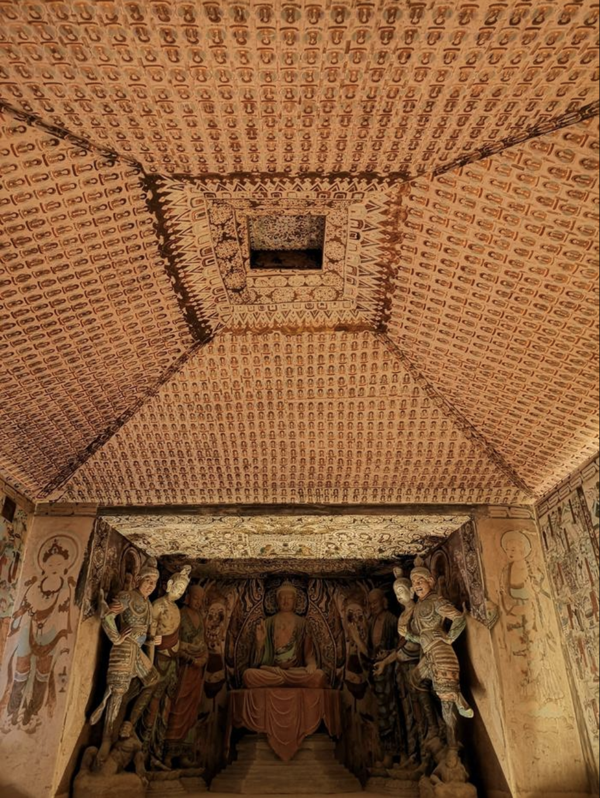
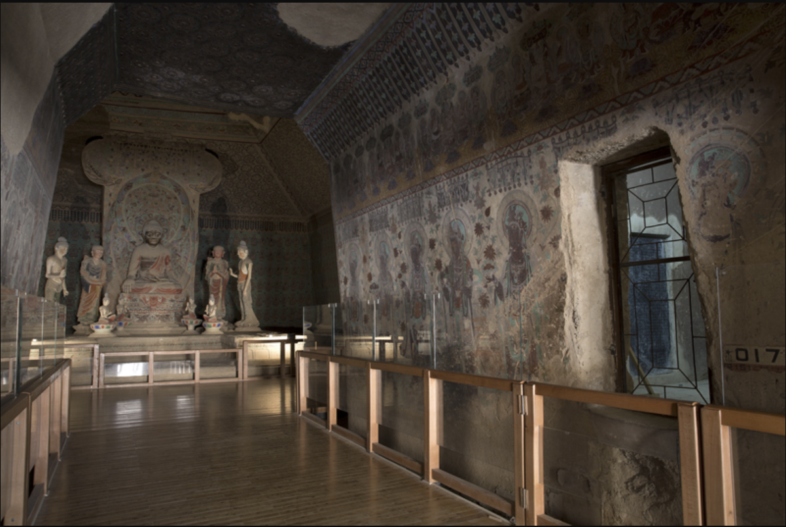

敦煌莫高窟
Dunhuang-Mogao Grottoes
Discover the Timeless Beauty of the Dunhuang Mogao Grottoes
Where Art, Faith, and the Silk Road Come Alive
Nestled on the edge of the Gobi Desert, in the quiet embrace of northwestern China's vast sands, lies a cultural treasure trove unlike any other in the world — the Dunhuang Mogao Caves. Often referred to as the "Louvre of the East," the Mogao Caves (also known as the Caves of the Thousand Buddhas) are a stunning testament to the artistic, spiritual, and cultural brilliance of ancient China. From the moment you step into this UNESCO World Heritage Site, you are transported through a time tunnel that spans over a thousand years of continuous creativity, devotion, and cultural exchange. This is not just a historic site — it's a living gallery of human imagination.

The mural of the Nine-Colored Deer
The mural of the Nine-Colored Deer in the Mogao Caves at Dunhuang depicts a story from the Buddhist Jataka tales. In this tale, a beautiful, multicolored deer saves a drowning man. Later, the man betrays the deer by revealing its location to the king for a reward. However, the deer confronts the king, exposing the man's ingratitude. Moved by the deer's wisdom and compassion, the king protects it. The story teaches moral values like gratitude, honesty, and compassion
What Awaits You in the Caves?
The Mogao Caves house more than 700 caves carved into the cliffs, with 492 of them richly decorated with murals, sculptures, and manuscripts. The scale is breathtaking: over 45,000 square meters of wall paintings and 2,400 colorful clay sculptures, all preserved in astonishing detail. The art ranges from serene Buddhas and celestial musicians to dynamic narrative scenes that bring Buddhist scriptures, daily life, and ancient legends vividly to life. Every step you take here reveals a new wonder — golden halos painted with mineral pigments that still shimmer after centuries, expressive eyes that seem to follow you, and details so fine you'll find yourself holding your breath in awe.

Why You Should Visit
Visiting the Mogao Caves is like opening a beautifully illustrated book of world history, religion, and art — all at once. Whether you're a lover of fine art, a spiritual seeker, a historian, or simply a curious traveler, the Mogao Caves offer something deeply enriching:
A Brief Look at the History
The first cave was carved in 336 CE by a monk named Le Zun, who had a vision of a thousand Buddhas glowing in the cliffs at sunset. Inspired, he began digging the first sanctuary. What followed was a millennium of devotion — from the Northern Wei Dynasty through the Tang, Song, and Yuan dynasties — each contributing their own cultural and artistic touch.
By the 10th century, Dunhuang had become a major center of Buddhist learning and art, supported by pilgrims, traders, and local rulers. The cave temples became both a spiritual haven and a cultural bridge connecting China to Central Asia, India, Persia, and beyond.
In the early 20th century, the world rediscovered Mogao when the Library Cave (Cave 17) was found, containing tens of thousands of ancient manuscripts and texts, now housed in museums worldwide. This discovery transformed the study of Silk Road history and world civilizations.

Today's Experience
With expertly guided tours, immersive digital exhibitions, and conservation in action, the Mogao Caves offer a rare chance to encounter a world long gone — but still speaking to us through color, form, and spirit. The site is thoughtfully protected, so visits are by reservation to ensure this marvel endures for generations to come.
Come see where the desert whispers stories in painted light. Discover the Dunhuang Mogao Caves — a journey that touches not just the eyes, but the soul.